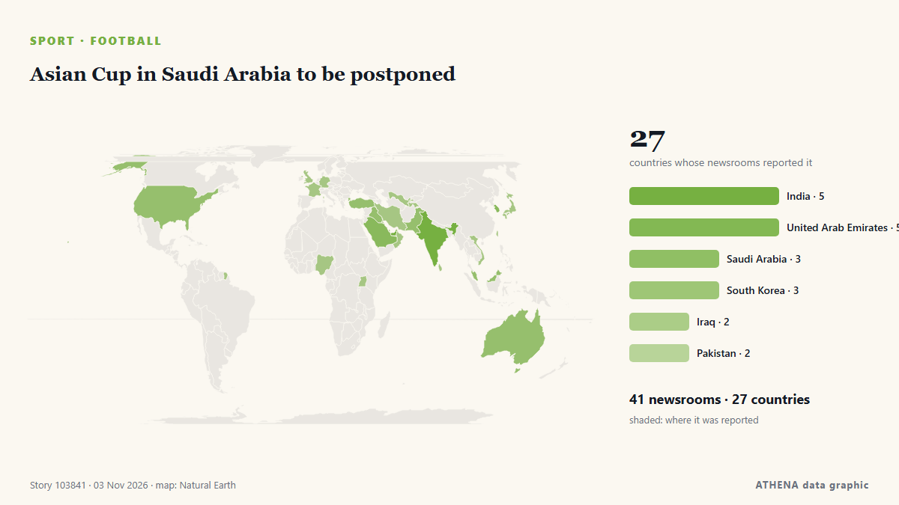

Asian Cup in Saudi Arabia to be postponed

Saudi Arabia, which will host the FIFA World Cup in 2034, will have an opportunity to use the 2027 Asian Cup as a dress rehearsal for the World Cup. from Sportstar
Reported independently by 41 outlets in 27 countries since 2 Nov, first by Sportstar; coverage is quiet now. Sport and culture stories are filed, not risk-assessed. Confidence is 89% (high), with 41 independent outlets corroborating it and an average source reliability of 74%. Outlets by country: United Arab Emirates (4), India (3), Saudi Arabia (3). Coverage: 2 Nov to 3 Nov, 24 hours.
What changed: 45 new reports from 39 outlets in the 24 hours to 4 Nov.
First reported as: 2027 Asian Cup faces postponement after Houthi attacks
At a glance
Selected, scored and written by ATHENA's published methodology. No editor intervenes in individual events. How this is produced ›
| 02 Nov 12:03 UTC | 1 |
|---|---|
| 02 Nov 14:03 UTC | 0 |
| 02 Nov 16:03 UTC | 1 |
| 02 Nov 18:03 UTC | 0 |
| 02 Nov 20:03 UTC | 0 |
| 02 Nov 22:03 UTC | 0 |
| 03 Nov 00:03 UTC | 0 |
| 03 Nov 02:03 UTC | 1 |
| 03 Nov 04:03 UTC | 2 |
| 03 Nov 06:03 UTC | 13 |
| 03 Nov 08:03 UTC | 15 |
| 03 Nov 10:03 UTC | 6 |
| 03 Nov 12:03 UTC | 5 |
| 03 Nov 14:03 UTC | 0 |
| 03 Nov 16:03 UTC | 1 |
| 03 Nov 18:03 UTC | 0 |
| 03 Nov 20:03 UTC | 1 |
| 03 Nov 22:03 UTC | 1 |
| 04 Nov 00:03 UTC | 0 |
| 04 Nov 02:03 UTC | 1 |
Why these numbers
Importance
Risk
Confidence
The reporting — who reported it, and when
headline as published · opens the original- Sportstar · IndiaWill AFC Asian Cup 2027 be postponed amid Houthi attacks and threats in Saudi Arabia?
- Shafaq News (English) · Iraq2027 Asian Cup faces postponement after Houthi attacks
- Express Tribune · PakistanAFC postpones Asian Cup 2027
- The National Herald · United StatesAsian Football Confederation Postpones the 2027 Asian Cup Because of Conflict in the Middle East
- Oman Observer · OmanAFC postpones Asian Cup 2027 in Saudi Arabia from January to December
- CNA (Channel NewsAsia) · SingaporeAsian Cup postponed until December 2027, AFC says
- ABC News Australia · AustraliaSaudi Arabia Asian Cup postponed due to conflict in Middle East
- Arab Times · KuwaitAFC Postpones 2027 Asian Cup in Saudi Arabia Amid Regional Security Concerns
- The National · United Arab EmiratesAFC postpones 2027 Asian Cup in Saudi Arabia due to security concerns
- Sportstar · IndiaAFC Asian Cup 2027 postponed after recent Houthi attacks on Saudi Arabia
- Al Jazeera English · QatarAFC reschedules Asian Cup 2027 in Saudi Arabia amid regional conflict
- New Straits Times · MalaysiaAFC postpones Asian Cup 2027 in Saudi Arabia from January to December
- Free Malaysia Today · MalaysiaAsian Cup postponed until December 2027, says AFC
- BBC News · United KingdomAsian Cup postponed in wake of attacks on Saudi Arabia
- Kun.uz (English) · UzbekistanAFC postpones Asian Cup in Saudi Arabia to December 2027
- Gulf News · United Arab EmiratesSaudi Arabia's 2027 AFC Asian Cup postponed by almost a year
- Shafaq News (English) · IraqAFC postpones Saudi Arabia’s 2027 Asian Cup
- Sportstar · IndiaAFC Asian Cup postponed — Which sporting events have been affected by attacks in Saudi Arabia
- Tehran Times · IranAFC postpones Saudi Arabia’s 2027 Asian Cup
- Arabian Business · United Arab EmiratesSaudi Arabia’s 2027 AFC Asian Cup postponed
- TRT World · TurkeyAsian Cup in Saudi Arabia postponed until December 2027 amid security concerns
- Al-Monitor · United StatesAsian Cup latest event in Saudi Arabia to be postponed after attacks
- Anadolu Agency (English) · TurkeyAFC postpones 2027 Asian Cup in Saudi Arabia by nearly a year
- Arab News · Saudi ArabiaAFC reschedules Saudi 2027 Asian Cup
- Punch · NigeriaAFC postpones 2027 Asian Cup till December
- News of Bahrain · BahrainAFC postpones 2027 Asian Cup in Saudi Arabia amid security concerns
- Asharq Al-Awsat (English) · Saudi ArabiaAFC Asian Cup in Saudi Arabia Postponed to December 2027
- SBS News · AustraliaAsian Cup postponed for 11 months due to conflict in the Middle East
- Tuoi Tre News · VietnamAsian Cup postponed until December 2027, AFC says
- The Korea Times · South KoreaAsian Cup delay means more uncertainty for Korean football
- Yonhap (English) · South KoreaAsian Cup football tournament postponed due to attacks on Saudi Arabia
- The New Arab · INTAsian Cup latest event in Saudi Arabia to be postponed
- Nile Post · UgandaAsian Cup postponed in wake of attacks on Saudi Arabia
- Euronews English · FranceAsian Cup in Saudi Arabia postponed to December over regional security
- Arab News · Saudi ArabiaSPL postpones Matchday 13 as Asian Cup delay prompts calendar review
- DW English · GermanyAsian Cup postponed due to Middle East conflict
- Korea Herald · South KoreaAsian Cup football tournament postponed due to attacks on Saudi Arabia
- The National · United Arab EmiratesHow Asian Cup postponement will affect Europe’s big leagues as well as Gulf football
- CNA (Channel NewsAsia) · SingaporeLions will be ready for rescheduled AFC Asian Cup, safety remains top priority: FAS
- Business Recorder · PakistanSaudi Pro League postpones matchday 13 after Asian Cup delay